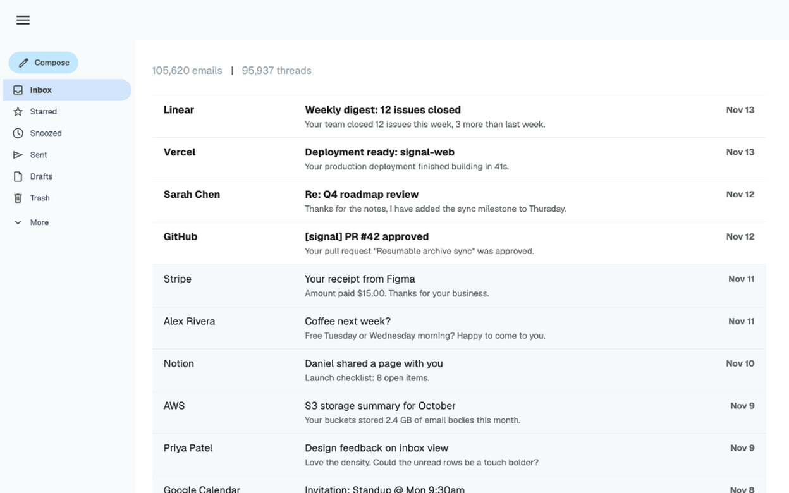
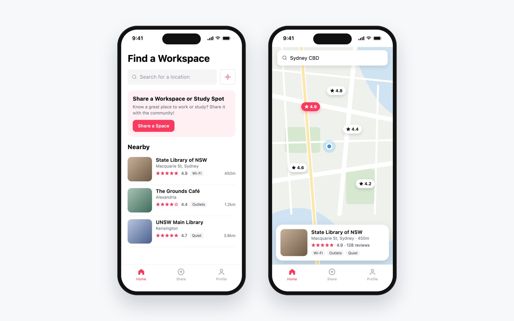
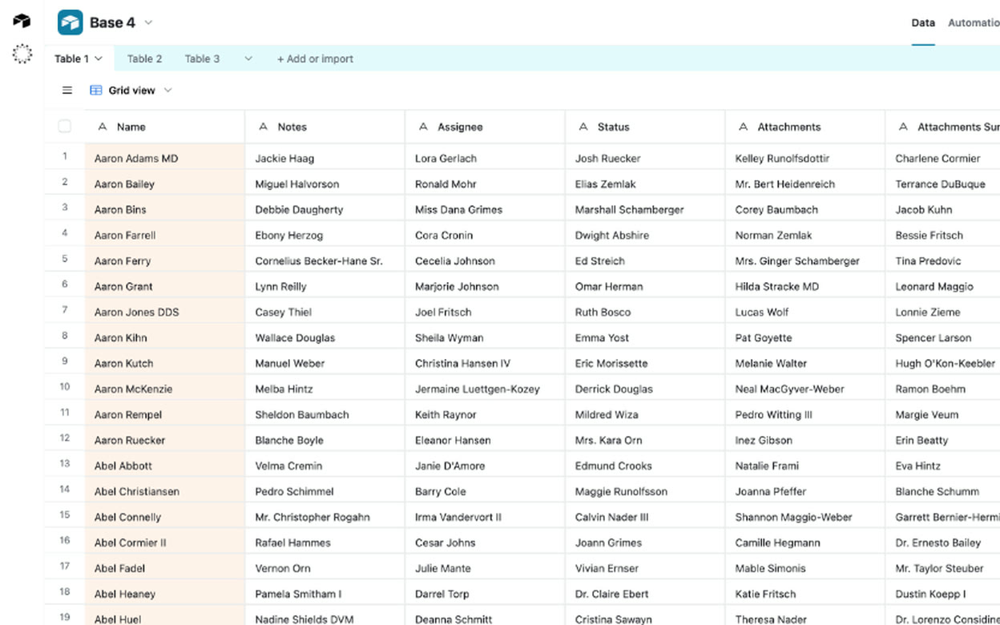
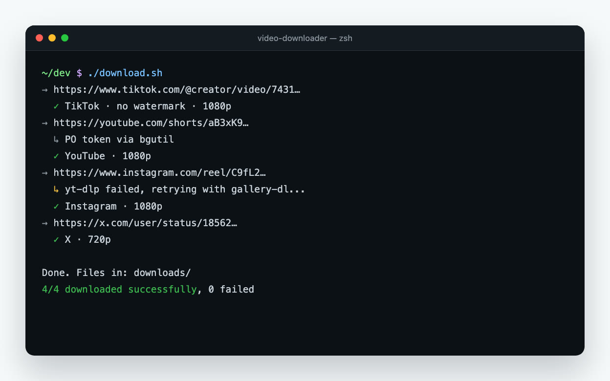
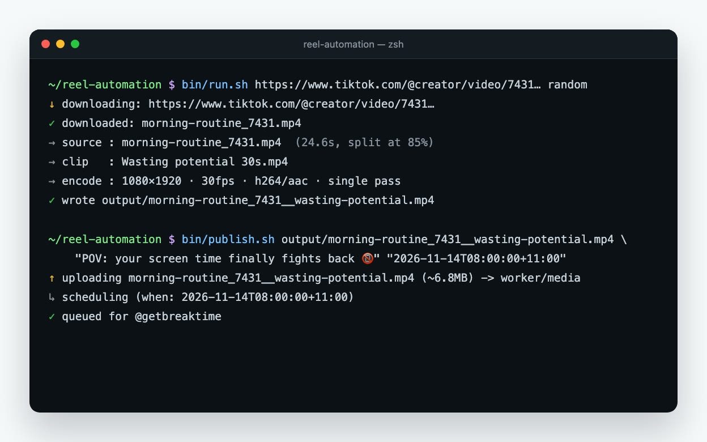
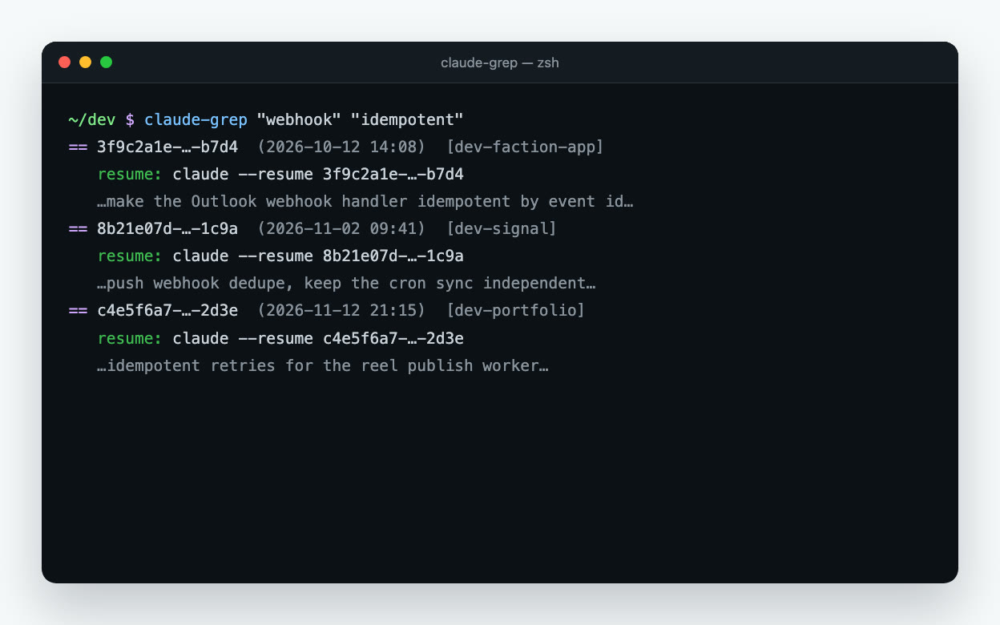

I develop web and mobile products end to end. Forward Deployed Engineer at Lyra, founder of Breaktime (15,000+ users) and a UNSW Computer Science / Commerce graduate (2022–2026).
Send me a message.
ATAR 98.05 · HSC All-Rounder Achievers List
Placed 2nd in a national case competition. As digital consultants, our team designed disaster readiness solutions for Australian floods: monitoring dashboards combining Bureau of Meteorology data, IoT water level sensors and weather APIs in real-time Power BI.
Selected for the UNSW Co-op Program, an industry scholarship with paid placements, which led to my backend engineering placement at Macquarie Group.
Built a full-stack habit tracker: a Next.js and Firebase web app plus a React Native app synced with Apple HealthKit, with streaks, success rates and a calendar view.
Built a cyberbullying detection web app in Next.js. It scraped social media comments with BeautifulSoup and used the ChatGPT API to classify types of bullying.

Resumable archive sync, webhook-driven push notifications, TanStack Query + tRPC prefetching with Suspense, and raw emails parsed into S3.

Find and share places to study or work, with a client-side cache that speeds up map loads.

An Airtable-style spreadsheet database, deployed on Vercel.

Batch-downloads TikTok, YouTube, Instagram, X and Reddit videos without watermarks.

Turns a video link into a posted Instagram Reel: downloads it, splices in a Breaktime clip with a frame-accurate cut, and schedules the post.

Searches past Claude Code sessions by keyword and prints the resume command for each hit.